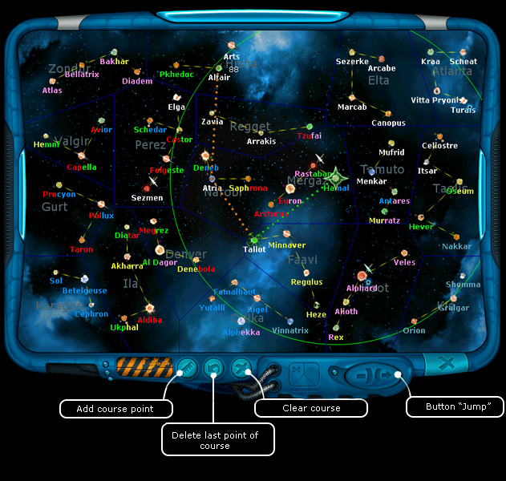
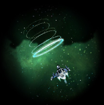

Ranger manual > Space
screen > Jump to star
|
Ranger manual > Space
screen > Jump to star
|
| Jump to star To make a jump to another star system: 1. Being in space open the "Galaxy map" (M). |

| 2. In the operation radius of the hyper-engine (shown in form of a circle
with the center in the current star system) click a star, you wish to make a hyper-jump to
The map will display the way to this star system. 3. Double-click the star you neded and press the 'Jump' button. The 'Galaxy map' window will close, and the ship itself will make its way to the point of the hyper-jump. 4. Press the 'End of turn' button or Space key. Note. If you chose a star system, which you can hardly reach, the game will let you know it. Reasons: Either you have a poor engine, or it is lacking the fuel. As soon as your spaceship reaches the end of the current star system, it will make a hyper-jump. |

| |